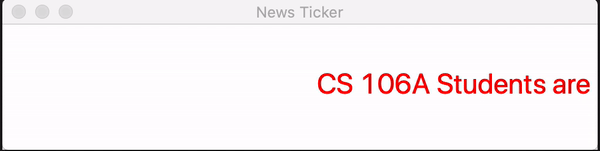
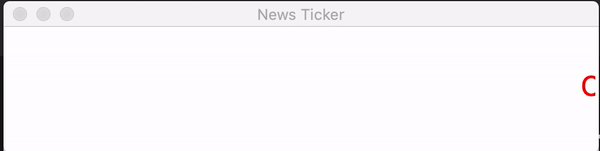

Section #4: Lists & Animations
May 3rd, 2020
Written by Brahm Capoor, Andrew Tierno and Juliette Woodrow
Lists Review
Collapse
Implement the following function:
def collapse(lst):
"""
Accepts a list of integers as a parameter and returns a new
list containing the result of replacing each pair of integers
with the sum of that pair.
If the list stores an odd number of elements, the final element
is not collapsed
>>> nums = [7, 2, 8, 9, 4, 13, 7, 1, 9, 10]
>>> collapse(nums)
[9, 17, 17, 8, 19]
>>> nums = [1, 2, 3, 4, 5]
>>> collapse(nums)
[3, 7, 5]
"""
Distinct Elements
Implement the following function:
def distinct_elements(lst):
"""
Returns a list of all the disinct elements in lst, in the order that
they first occur in lst.
>>> distinct_elements([1, 2, 3, 4])
[1, 2, 3, 4]
>>> distinct_elements([1, 1, 2, 2, 3])
[1, 2, 3]
>>> distinct_elements(['hello', 'hello', 'hello', 'hello', 'hello'])
['hello']
>>> distinct_elements([])
[]
"""
Rotate
Implement the following function:
def rotate_list_right(lst, n):
"""
returns a 'rotate' version of the list that rotates numbers
to the right n times. Each element in numbers is shifted
forward n places, and the last n elements are moved to
the start of the list.
Your function should not change the list that is passed as a
parameter.
>>> rotate_list_right([1, 2, 3, 4, 5], 2)
[4, 5, 1, 2, 3]
"""
Building a News Ticker
News channels often operate what's called a News Ticker: a banner on the
bottom of the screen across which breaking news scrolls whilst the
anchor is speaking.
In this problem, you'll be implementing a program that simulates a News
Ticker, like so:

The program will first read in a sequence of 'headlines', or messages
from the user and will then make a new window and scroll each of the
messages across the bottom of the window in turn.
This is not a long program, but it is dense: it puts together a lot of
the concepts you've been learning about in the last few lectures, so we
encourage you to approach it using the milestones we've suggested below.
All the code for this problem should be written in
news_ticker.py.
Milestone 1: Animating a single message
To get started, write a program that animates a single label across the
screen, like so
We'll start by writing a program that scrolls a single message across
the screen, like so:

Unlike the animation above suggests, the scroll doesn't need to repeat
in this milestone. The text just needs to scroll by once.
Here's a few tools that you might find helpful as you write this:
-
Calling
canvas.create_text(x, y, anchor='w', fill='black',
text='Hello!')
will create a black text label on the screen whose left side is
centered at (x, y) and which says Hello!.
Additionally, you can specify the font of the label by providing the
parameter font=('fontname', fontsize). For example, we
made the label in the example have a font of Calibri and fontsize of
24 by specifying font=('Calibri', 24).
create_text returns the Object ID of the label, which
can then be used to move the canvas or get its coordinates.
We've also provided two constants, CANVAS_WIDTH and
CANVAS_HEIGHT that represent the dimensions of your
canvas. The label should be centered vertically and should start off
beyond the right edge of the canvas.
-
Recall that the basic animation loop looks like this:
while True:
# update location of objects, often using canvas.move
canvas.update()
time.sleep(DELAY)
canvas.move() takes in as parameters the ID of the
object to move (remember that
canvas.create_text returns this label), as well as two
integers representing how far you want the object to move in the x
and y directions. We've provided two constants DX and
DY for you to use, although these just represent
magnitudes - it's up to you to figure out what to do with
DX to make the label scroll to the left.
We've also provided a constant DELAY for you to use in
the call to time.sleep. You're welcome to change this
constant's value as you see fit.
Milestone 2: Repeating the message
Having a message scroll across the window once is progress, but we're
not quite there yet. Currently, once our label has scrolled past the
left edge of the screen, it just keeps going, leaving us starting at an
unspiring blank window.
In this milestone, edit your animation loop to reset your label once it
moves past the left edge of the screen. We've provided you with the
get_right_x helper function, which takes in the canvas and
label ID as parameters and returns the rightmost x-coordinate of the
label, which you might find handy.
By the end of this milestone, you should have a program that scrolls the
message of your choosing across the window repeatedly.
Milestone 3: Getting Messages from the User
Now, we'll start working on getting messages from the user, as opposed
to hardcoding them into the program. To get started, implement the
following function:
def get_messages():
"""
Reads a series of messages from the user, ending when they
input a blank message. Returns a list of all the messages
the user typed.
"""
Here's the run of this function that produced the messages in the sample
run above (user input is italicized):
Type a message here or press enter to finish: CS 106A Students are crushing it
Type a message here or press enter to finish: So long and thanks for all the fish
Type a message here or press enter to finish: Avengers Assemble
Type a message here or press enter to finish: User presses enter immediately
Although you can't see it in the sample output, the function returned
the list
["CS 106A Students are crushing it", "So long and thanks for all the
fish", "Avengers Assemble"]
to the function that called it once the user entered an empty message.
Milestone 4: Making messages appear one after the other
All the pieces are in place now: we have a list of messages that we want
to display, and we've developed infrastructure for a label with fixed
text to scroll across the screen. Now, we just need to put these jigsaw
pieces together to have the messages scroll across the screen in turn.
There are a few steps we need to take to achieve this:
-
First, we need to call the
get_messages function to get a
list of messages from the user.
-
Next, we need to set the initial label to the first message that the
user provided.
-
Finally, once a label has scrolled past the end of the window, make a
new label with the next message in the list. Keep in mind that you'll
need to wrap around to the first message once the last message has
scrolled. How can you keep track of your current position in the
messages list?